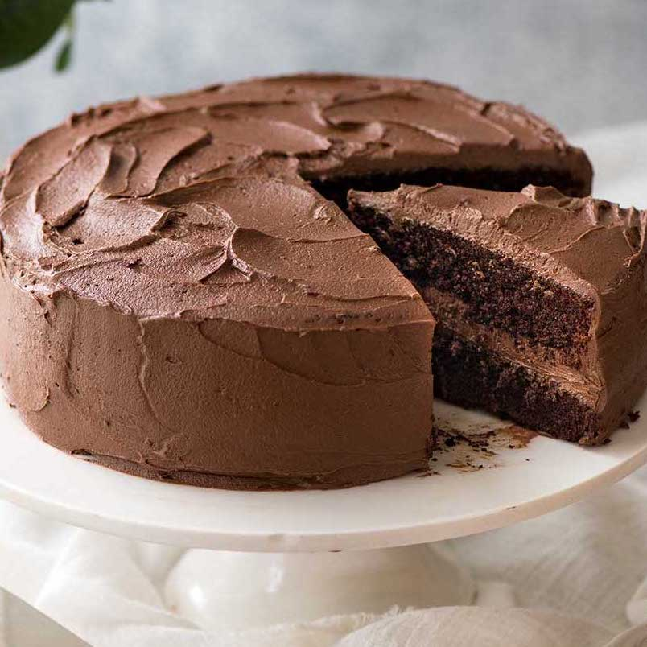

Opskrift
Ingredienser
Kage
- 6 spsk. kakaopulver
- 250g. hvedemel
- 300 g. sukker
- 1 tsk. natron
- 1 tsk. bagepulver
- 1 knsp. Salt
- 2 æg
- 150 g. blødgjort smør
- 2½ dl. vand
Glasur
- 200 g. flormelis
- 3 spsk. kakaopulver
- 2 spsk. smør
- ½ dl. mælk
Fremgansmåde
- Tænd ovnen på 170 grader.
- Rør blødgjort smør og sukker sammen, til det er hvidt og skummende.
- Tilsæt æggene et af gangen, så de bliver mixet godt sammen.
- Tilsæt de øvrige ingredienser og rør med en håndmixer i 2-3 minutter, til dejen er helt jævn.
- Hæld chokoladekagedejen op i et ildfast fad eller mindre bradepande, smurt eller beklædt med bagepapir.
- Bag chokoladekagen på nederste rille i ovnen i ca 35 minutter.
- Når kagen er færdigbagt, skal den køles af.
- Glasur: Kakao, flormelis, blødt smør, kanel og varm mælk blandes, så den er tyk og smøres på når kagen er
kold.

chokoladekage
Oprindelig opskrift